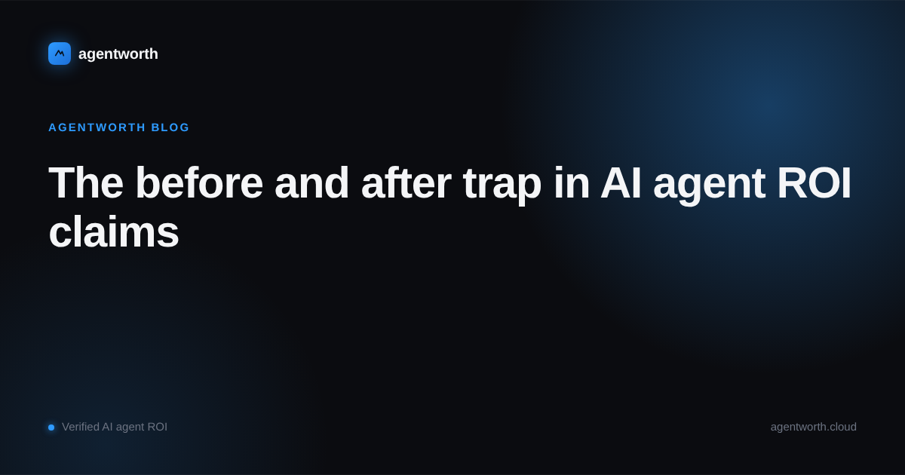

The before and after trap in AI agent ROI claims

Ticket volume drops after you turn on an AI agent and the chart looks exactly like proof. Support load falls, the team breathes easier, and someone builds a slide with a line going down and a caption that says the agent is working. It might be true. It might also have nothing to do with the agent at all.
That gap is the before and after trap, and it is the single most common way AI agent ROI claims fall apart once someone outside the team actually checks them.
What the chart cannot tell you
A drop in ticket volume or handling time after launch is consistent with the agent working. It is also consistent with a dozen other explanations that have nothing to do with it. Maybe the product shipped a fix that quietly removed the most common complaint. Maybe marketing cut spend and fewer new customers means fewer new tickets. Maybe it is just the slow month your support queue always has, agent or no agent. A single before and after comparison cannot tell these apart, because it only has one timeline to look at.
Boards and finance teams have seen enough of these charts to be skeptical by default, and they are right to be. A number that cannot rule out the obvious alternative explanations is not a measurement. It is a correlation wearing a measurement's clothes.
Why this keeps slipping through
It keeps slipping through because the alternative is genuinely harder to build, and most teams are not set up to build it. Proving causation instead of pointing at a correlation means holding something constant to compare against: a holdout segment of tickets the agent never touches, a matched period from a comparable team or region, or at minimum a documented list of everything else that changed around the same time so reviewers can judge for themselves. None of that comes free out of a support platform's default reporting. Someone has to design it in before the launch, not reconstruct it afterward from whatever data happened to survive.
There is also a quieter incentive problem. The team that owns the agent is usually the same team that gets to pick which chart goes in the deck, and a rising line is a much easier conversation to have than a flat one. Nobody is lying, exactly. They are just choosing the version of the data that needs the least explaining, and the version that needs the least explaining is almost never the rigorous one.
What a defensible claim actually looks like
A causal claim about an AI agent's impact needs a comparison, not just a timeline. The cleanest version routes a slice of incoming tickets away from the agent on purpose, so the handled group and the untouched group live through the same month, the same product changes, and the same marketing calendar, and only one of them has the agent. Where a clean holdout is not practical, the fallback is a written, dated record of what else changed at launch time, so a skeptical reader can weigh the agent's share of the effect instead of being asked to trust the chart on faith.
Either way, the record has to exist before someone asks the question, not after. A finance team that gets a spreadsheet built two weeks before the board meeting has every reason to assume it was built to answer that meeting, because it usually was.
This is the part of the ROI problem that agentworth actually solves. Every case the agent touches gets logged with a timestamp, an outcome, and whether it held, alongside a comparison group that was never routed to the agent in the first place. By the time anyone asks whether the savings are real, the answer does not depend on a chart someone built for the occasion. It is already sitting in the log.
If you want to see how this looks against your own numbers, try the free ROI calculator, or read the full ROI report for more on how far ahead of proof AI agent spending has gotten industry wide.